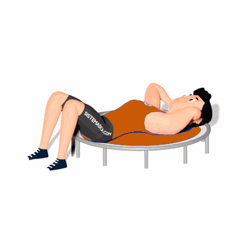

Abdominal Supra Curto no Jump

Este abdominal é mais indicado para iniciantes e trabalha especialmente a parte superior do abdômen, nos músculos retos.
Ficha Técnica
Tipo: Funcional
Grupo Muscular: Abdome
Aparelho: Nenhum
Músculos: Nenhum
Como realizar
- Deite-se no trampolim;
- Mantenha os pés fixos ao solo e alinhados ao quadril;
- Flexione os braços, colocando as mãos nas orelhas;
- Incline seu queixo para que fique próximo ao pescoço;
- Suba o tronco 30° até que os ombros saiam do solo. Puxe o ar (inspire) e contraia o abdômen durante a subida;
- Volte à posição inicial, soltando o ar durante a descida. Repita todo o processo.
 RC STORE
RC STORE